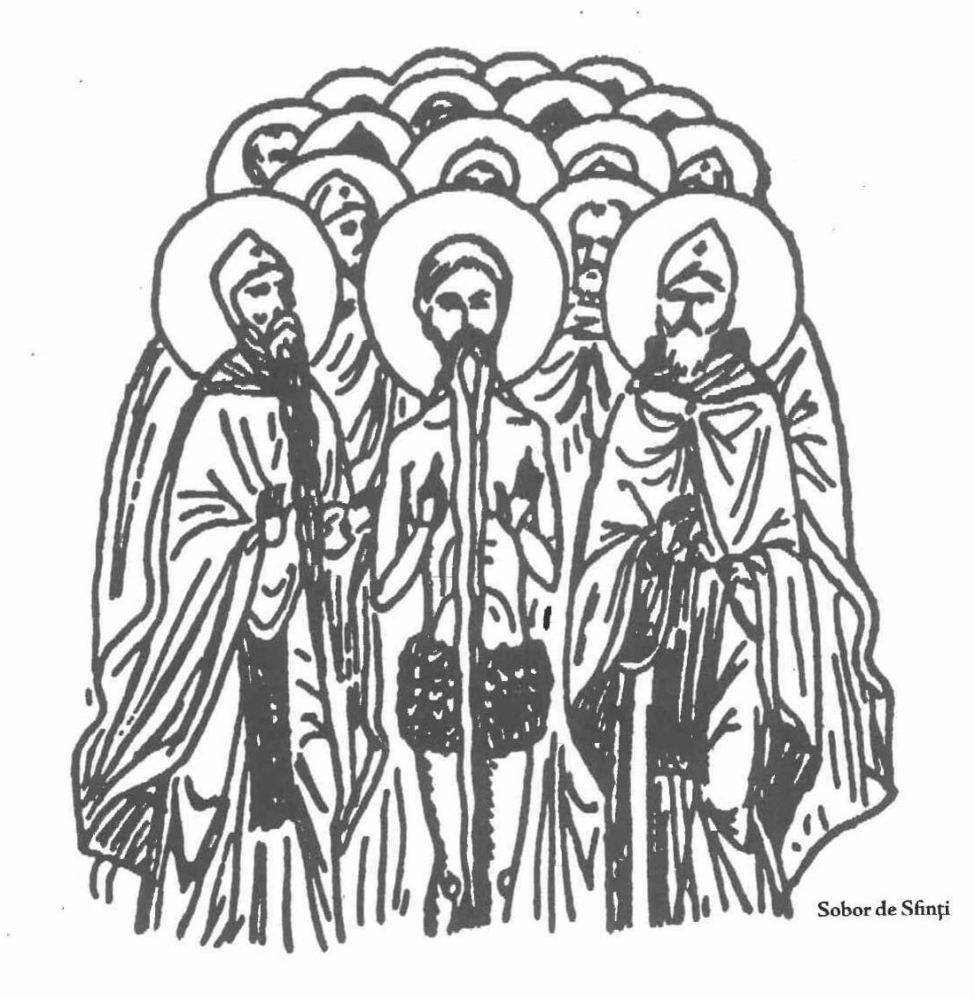

În această lună, în ziua a douăzeci și treia, pomenirea Preacuviosului părintelui nostru Mihail Mărturisitorul, episcopul Sinadelor.
Acest sfânt ce poartă numele îngeresc Mihail, fiind dăruit lui Dumnezeu din brațele mamei sale, și curățindu-se pe sine cu întregimea vieții, s-a făcut preot lui Dumnezeu celui preaînalt, și fiind întărit de Dumnezeu, a stins și a potolit toată bârfirea și deșertăciunea hulitorilor de Dumnezeu, astupând gurile cele fără de Dumnezeu ale ereticilor, ce se deschideau împotriva sfintelor icoane. Și neputând suferi fiara cea cumplită, adică tiranul Leon Armeanul, dumnezeieștile cuvinte ale grăirii sale, deoarece sfântul nu s-a spăimântat de înfricoșările lui nici s-a muiat cu mintea de acelea, ci cu glas slobod striga: „Eu mă închin și cinstesc dumnezeiasca și cinstita icoană a Mântuitorului nostru Iisus Hristos, și a sfintei Maicii Sale, iar dogma și porunca ta o scuip și nu o bag în seamă”.
După aceea, rușinându-se tiranul și aprinzându-se de mânie, l-a osândit cu o depărtată izgonire, iar sfântul păzind chipul lui Dumnezeu curat și neîntinat a fost gonit din loc în loc. Și așa săvârșind alegerea cea bună și împodobindu-se cu îndoite cununi, s-a adăugat către arhierei ca un arhiereu, și către mucenici ca un mucenic.
Tot în această zi, pomenirea sfintei purtătoarei de mir Maria lui Cleopa, care cu pace s-a săvârșit.
Tot în această zi, pomenirea sfântului mucenic Salona Romanul, care de sabie s-a săvârșit.
Tot în această zi, pomenirea sfântului mucenic Seluc, care s-a săvârșit fiind tăiat cu ferăstrăul.
Cu ale lor sfinte rugăciuni, Doamne, miluiește-ne și ne mântuiește pe noi. Amin.
3. Și le-au grăit lor multe, în pilde, zicând: iată, a ieșit semănătorul să seamene sămânța sa.
4. Și semănând el, unele au căzut lângă cale, și au venit pasările și le-au mâncat pre ele,
5. Iar altele au căzut pre petriș, unde n'aveau pământ mult, și îndată au răsărit, pentru căci n'aveau pământ adânc;
6. Și răsărind soarele, s'au pălit, și pentru că n'aveau rădăcină, s'au uscat,
7. Iar altele au căzul în spini, și au crescui spinii și le-au înnecat pre ele.
8. Tar altele au căzut pre pământ bun și au dat roadă: una adecă o sută, iar alta șasezeci, iar alta treizeci.
9. Cela ce are urechi de auzit, auză.
Biblia Sinodală - 1914